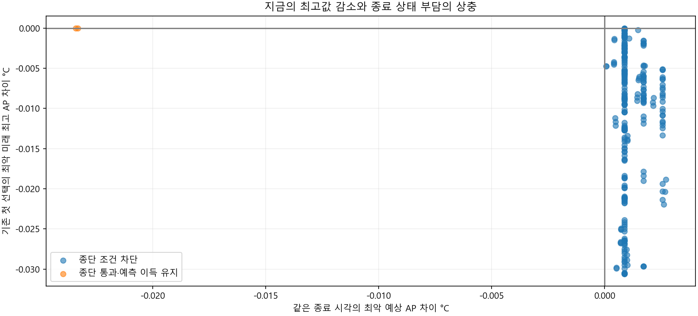
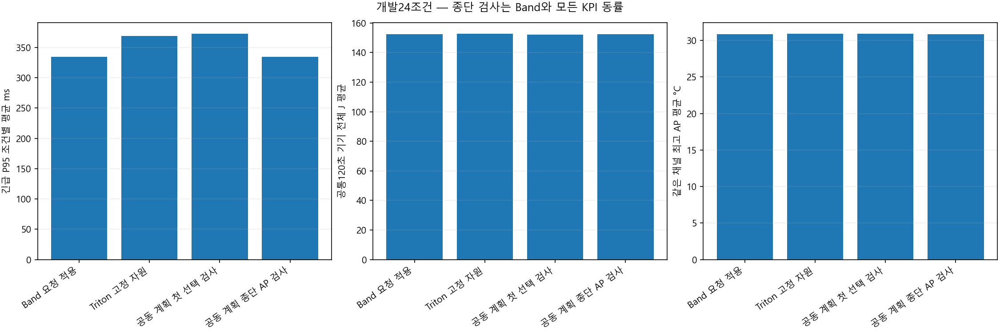
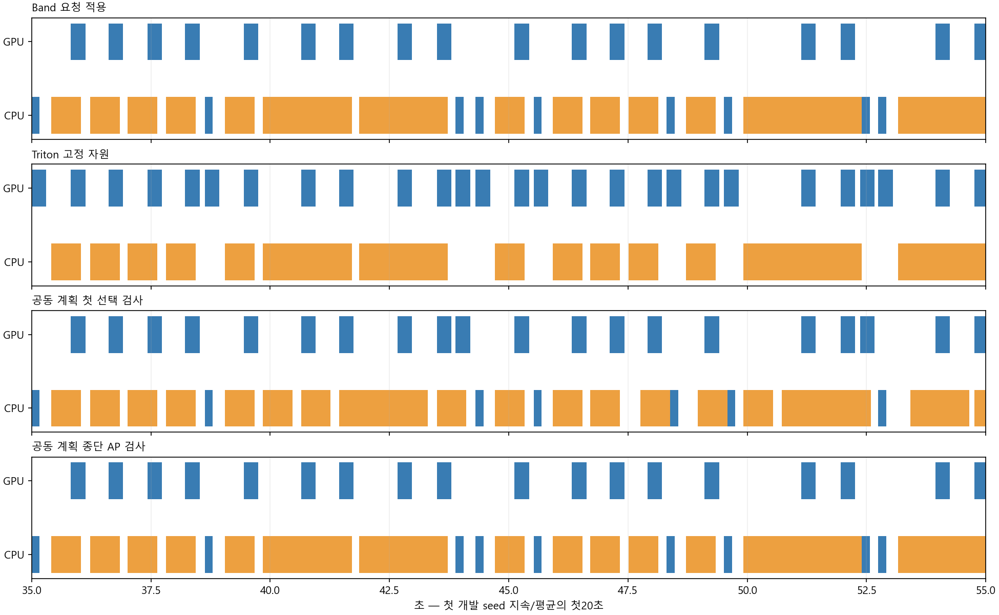
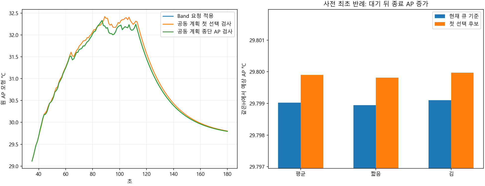
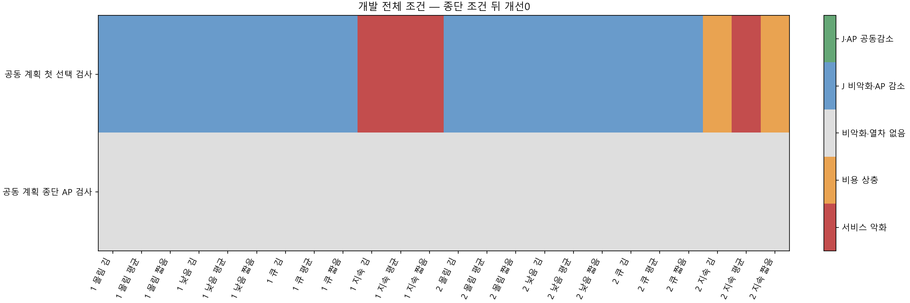

원모형 g=0: h는 새 작업의 잔열 누적 정보가 아닙니다. 원 경로의 예측 기회2건 → 새 정책 실제 개발24조건 모두 기준과 동일. 추가 이득0으로 새확인·학습을 중단했습니다.
동일 미래 입력의 조건부 수식과 실제 미래 요청/기기 보장은 구분합니다. AP는 표면온도가 아닙니다.
결과·수식·한계 · 개발 전체 CSV · 중단1회와 기록 연결 수정
| 규칙 | 판단 차이 |
|---|---|
| Band 요청 적용 | 출처 기반 요청 배정 |
| Triton 고정 자원 | 출처 기반 고정 자원 |
| 공동 계획 첫 선택 검사 | 후속 계획과 첫 선택 검사 |
| 공동 계획 종단 AP 검사 | 첫 선택 + 공통H의 AP/h 조건 |
| 정책 | 완료 | 예정 | 일반 기한 실패 | P95 평균 ms | J 평균 | 최고AP 평균 | AP감소 | 종단검사 | 차단 |
|---|---|---|---|---|---|---|---|---|---|
| Band 요청 적용 | 1584 | 1584 | 24 | 334.34355 | 152.27444 | 30.873521 | 0 | 0 | 0 |
| Triton 고정 자원 | 1584 | 1584 | 24 | 368.81223 | 152.70094 | 30.910489 | 0 | 0 | 0 |
| 공동 계획 첫 선택 검사 | 1584 | 1584 | 24 | 372.51312 | 152.09249 | 30.889391 | 18 | 0 | 0 |
| 공동 계획 종단 AP 검사 | 1584 | 1584 | 24 | 334.34355 | 152.27444 | 30.873521 | 0 | 540 | 377 |
| seed | 부하 | 문맥 | 원첫선택 | 기존검사통과 | 종단통과 | 첫선택이득 | 이득과종단통과 | 냉각후보 | 냉각통과 |
|---|---|---|---|---|---|---|---|---|---|
| 813010101 | low | mean | 6 | 6 | 0 | 6 | 0 | 6 | 0 |
| 813010101 | low | short_context | 6 | 6 | 0 | 6 | 0 | 6 | 0 |
| 813010101 | low | long_context | 6 | 6 | 0 | 6 | 0 | 6 | 0 |
| 813010101 | queue | mean | 9 | 9 | 8 | 1 | 0 | 1 | 0 |
| 813010101 | queue | short_context | 9 | 9 | 8 | 1 | 0 | 1 | 0 |
| 813010101 | queue | long_context | 9 | 9 | 8 | 1 | 0 | 1 | 0 |
| 813010101 | burst | mean | 9 | 9 | 8 | 1 | 0 | 1 | 0 |
| 813010101 | burst | short_context | 9 | 9 | 8 | 1 | 0 | 1 | 0 |
| 813010101 | burst | long_context | 8 | 8 | 7 | 1 | 0 | 1 | 0 |
| 813010101 | sustained | mean | 112 | 105 | 54 | 50 | 1 | 44 | 0 |
| 813010101 | sustained | short_context | 113 | 106 | 53 | 52 | 1 | 46 | 0 |
| 813010101 | sustained | long_context | 105 | 97 | 51 | 44 | 0 | 40 | 0 |
| 813010102 | low | mean | 3 | 3 | 0 | 3 | 0 | 3 | 0 |
| 813010102 | low | short_context | 3 | 3 | 0 | 3 | 0 | 3 | 0 |
| 813010102 | low | long_context | 3 | 3 | 0 | 3 | 0 | 3 | 0 |
| 813010102 | queue | mean | 9 | 9 | 8 | 1 | 0 | 1 | 0 |
| 813010102 | queue | short_context | 9 | 9 | 8 | 1 | 0 | 1 | 0 |
| 813010102 | queue | long_context | 9 | 9 | 8 | 1 | 0 | 1 | 0 |
| 813010102 | burst | mean | 8 | 8 | 7 | 1 | 0 | 1 | 0 |
| 813010102 | burst | short_context | 8 | 8 | 7 | 1 | 0 | 1 | 0 |
| 813010102 | burst | long_context | 8 | 8 | 7 | 1 | 0 | 1 | 0 |
| 813010102 | sustained | mean | 64 | 64 | 29 | 35 | 0 | 33 | 0 |
| 813010102 | sustained | short_context | 70 | 70 | 32 | 38 | 0 | 36 | 0 |
| 813010102 | sustained | long_context | 60 | 60 | 27 | 33 | 0 | 31 | 0 |
| seed | 부하 | 문맥 | 후보 | 양 기준 판정 | J 차이 | AP 차이 | P95 차이 ms |
|---|---|---|---|---|---|---|---|
| 813010101 | low | mean | Triton 고정 자원 | 서비스 악화 | 0.28555104 | 0.055439142 | 137.8747 |
| 813010101 | low | mean | 공동 계획 첫 선택 검사 | J 비악화·AP 감소 | 0 | -0.023390241 | 0 |
| 813010101 | low | mean | 공동 계획 종단 AP 검사 | 비악화·열차 없음 | 0 | 0 | 0 |
| 813010101 | low | short_context | Triton 고정 자원 | 서비스 악화 | 0.26363747 | 0.053895469 | 130.42855 |
| 813010101 | low | short_context | 공동 계획 첫 선택 검사 | J 비악화·AP 감소 | 0 | -0.023353978 | 0 |
| 813010101 | low | short_context | 공동 계획 종단 AP 검사 | 비악화·열차 없음 | 0 | 0 | 0 |
| 813010101 | low | long_context | Triton 고정 자원 | 서비스 악화 | 0.30746461 | 0.056983363 | 145.32086 |
| 813010101 | low | long_context | 공동 계획 첫 선택 검사 | J 비악화·AP 감소 | 0 | -0.023424575 | 0 |
| 813010101 | low | long_context | 공동 계획 종단 AP 검사 | 비악화·열차 없음 | 0 | 0 | 0 |
| 813010101 | queue | mean | Triton 고정 자원 | 비악화·열차 없음 | 0 | 0 | 0 |
| 813010101 | queue | mean | 공동 계획 첫 선택 검사 | J 비악화·AP 감소 | 0 | -0.020005371 | 0 |
| 813010101 | queue | mean | 공동 계획 종단 AP 검사 | 비악화·열차 없음 | 0 | 0 | 0 |
| 813010101 | queue | short_context | Triton 고정 자원 | 비악화·열차 없음 | 0 | 0 | 0 |
| 813010101 | queue | short_context | 공동 계획 첫 선택 검사 | J 비악화·AP 감소 | 0 | -0.02140018 | 0 |
| 813010101 | queue | short_context | 공동 계획 종단 AP 검사 | 비악화·열차 없음 | 0 | 0 | 0 |
| 813010101 | queue | long_context | Triton 고정 자원 | 비악화·열차 없음 | 0 | 0 | 0 |
| 813010101 | queue | long_context | 공동 계획 첫 선택 검사 | J 비악화·AP 감소 | 0 | -0.018693146 | 0 |
| 813010101 | queue | long_context | 공동 계획 종단 AP 검사 | 비악화·열차 없음 | 0 | 0 | 0 |
| 813010101 | burst | mean | Triton 고정 자원 | 비악화·열차 없음 | 0 | 0 | 0 |
| 813010101 | burst | mean | 공동 계획 첫 선택 검사 | J 비악화·AP 감소 | 0 | -0.01989002 | 0 |
| 813010101 | burst | mean | 공동 계획 종단 AP 검사 | 비악화·열차 없음 | 0 | 0 | 0 |
| 813010101 | burst | short_context | Triton 고정 자원 | 비악화·열차 없음 | 0 | 0 | 0 |
| 813010101 | burst | short_context | 공동 계획 첫 선택 검사 | J 비악화·AP 감소 | 0 | -0.021288234 | 0 |
| 813010101 | burst | short_context | 공동 계획 종단 AP 검사 | 비악화·열차 없음 | 0 | 0 | 0 |
| 813010101 | burst | long_context | Triton 고정 자원 | 비악화·열차 없음 | 0 | 0 | 0 |
| 813010101 | burst | long_context | 공동 계획 첫 선택 검사 | J 비악화·AP 감소 | 0 | -0.018574363 | 0 |
| 813010101 | burst | long_context | 공동 계획 종단 AP 검사 | 비악화·열차 없음 | 0 | 0 | 0 |
| 813010101 | sustained | mean | Triton 고정 자원 | 비용 상충 | 1.5041744 | 0.068701181 | 0 |
| 813010101 | sustained | mean | 공동 계획 첫 선택 검사 | 서비스 악화 | -0.66224995 | 0.088441907 | 304.82947 |
| 813010101 | sustained | mean | 공동 계획 종단 AP 검사 | 비악화·열차 없음 | 0 | 0 | 0 |
| 813010101 | sustained | short_context | Triton 고정 자원 | 비용 상충 | 1.3862356 | 0.066568726 | 0 |
| 813010101 | sustained | short_context | 공동 계획 첫 선택 검사 | 서비스 악화 | -0.70567184 | 0.088717122 | 297.1061 |
| 813010101 | sustained | short_context | 공동 계획 종단 AP 검사 | 비악화·열차 없음 | 0 | 0 | 0 |
| 813010101 | sustained | long_context | Triton 고정 자원 | 비용 상충 | 1.6222507 | 0.071896571 | 0 |
| 813010101 | sustained | long_context | 공동 계획 첫 선택 검사 | 서비스 악화 | -0.59957573 | 0.094878569 | 312.55285 |
| 813010101 | sustained | long_context | 공동 계획 종단 AP 검사 | 비악화·열차 없음 | 0 | 0 | 0 |
| 813010102 | low | mean | Triton 고정 자원 | 서비스 악화 | 0.28555104 | 0.037827103 | 137.8747 |
| 813010102 | low | mean | 공동 계획 첫 선택 검사 | J 비악화·AP 감소 | 0 | -0.0044477737 | 0 |
| 813010102 | low | mean | 공동 계획 종단 AP 검사 | 비악화·열차 없음 | 0 | 0 | 0 |
| 813010102 | low | short_context | Triton 고정 자원 | 서비스 악화 | 0.26363747 | 0.036635569 | 130.42855 |
| 813010102 | low | short_context | 공동 계획 첫 선택 검사 | J 비악화·AP 감소 | 0 | -0.0044140602 | 0 |
| 813010102 | low | short_context | 공동 계획 종단 AP 검사 | 비악화·열차 없음 | 0 | 0 | 0 |
| 813010102 | low | long_context | Triton 고정 자원 | 서비스 악화 | 0.30746461 | 0.039020978 | 145.32086 |
| 813010102 | low | long_context | 공동 계획 첫 선택 검사 | J 비악화·AP 감소 | 0 | -0.0044796941 | 0 |
| 813010102 | low | long_context | 공동 계획 종단 AP 검사 | 비악화·열차 없음 | 0 | 0 | 0 |
| 813010102 | queue | mean | Triton 고정 자원 | 비악화·열차 없음 | 0 | 0 | 0 |
| 813010102 | queue | mean | 공동 계획 첫 선택 검사 | J 비악화·AP 감소 | 0 | -0.019964549 | 0 |
| 813010102 | queue | mean | 공동 계획 종단 AP 검사 | 비악화·열차 없음 | 0 | 0 | 0 |
| 813010102 | queue | short_context | Triton 고정 자원 | 비악화·열차 없음 | 0 | 0 | 0 |
| 813010102 | queue | short_context | 공동 계획 첫 선택 검사 | J 비악화·AP 감소 | 0 | -0.021361228 | 0 |
| 813010102 | queue | short_context | 공동 계획 종단 AP 검사 | 비악화·열차 없음 | 0 | 0 | 0 |
| 813010102 | queue | long_context | Triton 고정 자원 | 비악화·열차 없음 | 0 | 0 | 0 |
| 813010102 | queue | long_context | 공동 계획 첫 선택 검사 | J 비악화·AP 감소 | 0 | -0.018650409 | 0 |
| 813010102 | queue | long_context | 공동 계획 종단 AP 검사 | 비악화·열차 없음 | 0 | 0 | 0 |
| 813010102 | burst | mean | Triton 고정 자원 | 비악화·열차 없음 | 0 | 0 | 0 |
| 813010102 | burst | mean | 공동 계획 첫 선택 검사 | J 비악화·AP 감소 | 0 | -0.019689447 | 0 |
| 813010102 | burst | mean | 공동 계획 종단 AP 검사 | 비악화·열차 없음 | 0 | 0 | 0 |
| 813010102 | burst | short_context | Triton 고정 자원 | 비악화·열차 없음 | 0 | 0 | 0 |
| 813010102 | burst | short_context | 공동 계획 첫 선택 검사 | J 비악화·AP 감소 | 0 | -0.021093214 | 0 |
| 813010102 | burst | short_context | 공동 계획 종단 AP 검사 | 비악화·열차 없음 | 0 | 0 | 0 |
| 813010102 | burst | long_context | Triton 고정 자원 | 비악화·열차 없음 | 0 | 0 | 0 |
| 813010102 | burst | long_context | 공동 계획 첫 선택 검사 | J 비악화·AP 감소 | 0 | -0.018368213 | 0 |
| 813010102 | burst | long_context | 공동 계획 종단 AP 검사 | 비악화·열차 없음 | 0 | 0 | 0 |
| 813010102 | sustained | mean | Triton 고정 자원 | 비용 상충 | 1.3365497 | 0.13342199 | 0 |
| 813010102 | sustained | mean | 공동 계획 첫 선택 검사 | 서비스 악화 | -0.7851912 | 0.12450927 | 1.581247 |
| 813010102 | sustained | mean | 공동 계획 종단 AP 검사 | 비악화·열차 없음 | 0 | 0 | 0 |
| 813010102 | sustained | short_context | Triton 고정 자원 | 비용 상충 | 1.2237827 | 0.12987399 | 0 |
| 813010102 | sustained | short_context | 공동 계획 첫 선택 검사 | 비용 상충 | -0.83300078 | 0.17728856 | 0 |
| 813010102 | sustained | short_context | 공동 계획 종단 AP 검사 | 비악화·열차 없음 | 0 | 0 | 0 |
| 813010102 | sustained | long_context | Triton 고정 자원 | 비용 상충 | 1.4497294 | 0.13694994 | 0 |
| 813010102 | sustained | long_context | 공동 계획 첫 선택 검사 | 비용 상충 | -0.78123019 | 0.12952595 | 0 |
| 813010102 | sustained | long_context | 공동 계획 종단 AP 검사 | 비악화·열차 없음 | 0 | 0 | 0 |




